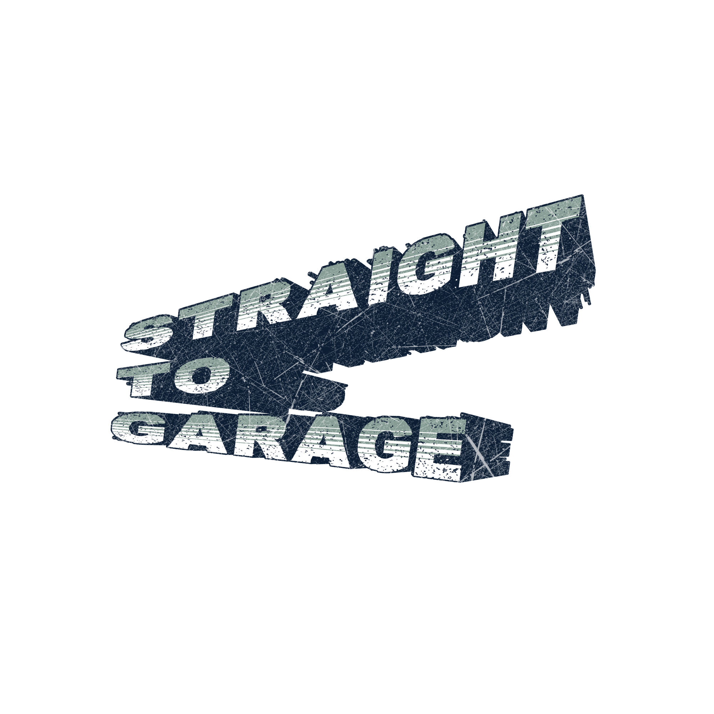

WORLD — STRAIGHT TO GARAGE
EST. 2026 — VRCHAT UNDERGROUND
Sound Collective — VRChat

COMING
SOON
.
.
.
00
Days
:
00
Hours
:
00
Min
:
00
Sec
Where Culture Meets Community.
Join VRChat Group
→
© 2026 Straight to Garage · Organised by
SYNE.